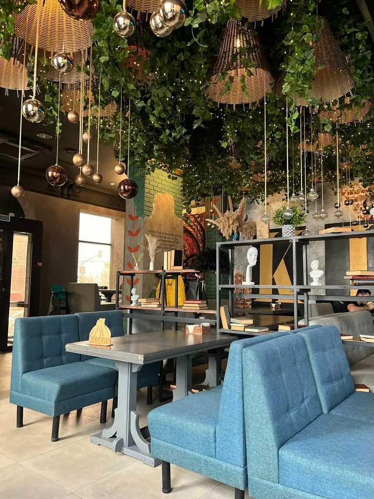
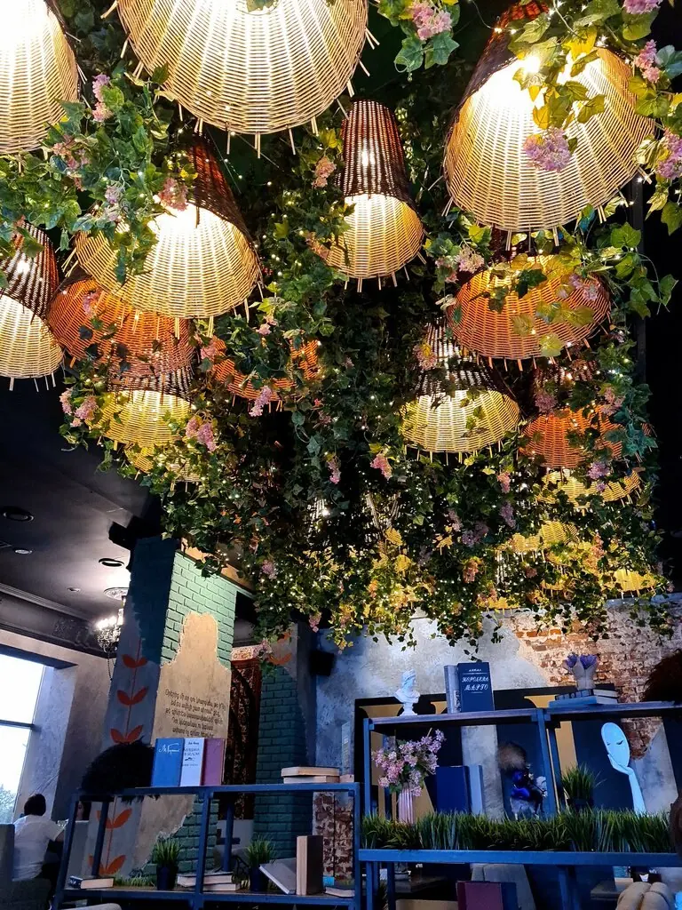

Волгоград+7 927 510-50-84
KINZA
Нерусская кухня: грузинская и армянская. Под потолком сад, в духовке хачапури.
4,9 · 1854 оценки
Нерусско-русский словарик
Нажмите на блюдо, и мы переведём.
Часть цен с Яндекс Карт, полное меню добавим из вашего прайса.

Обед 12:00–16:00
Гость заплатил 550 ₽ и получил три сытных блюда: борщ, винегрет и говядину по-горски. Летом работает веранда, с собакой тоже можно.
Отзывы
Самый лучший ресторан. Мы едем каждый раз с Волжского именно сюда.Гаяне Погосян
Был здесь на бизнес-ланче, заплатил 550 ₽, получил три сытных блюда. Всё очень понравилось.Никита Рыжков
Отличное место для того, чтобы очень вкусно поесть и отдохнуть.Мария